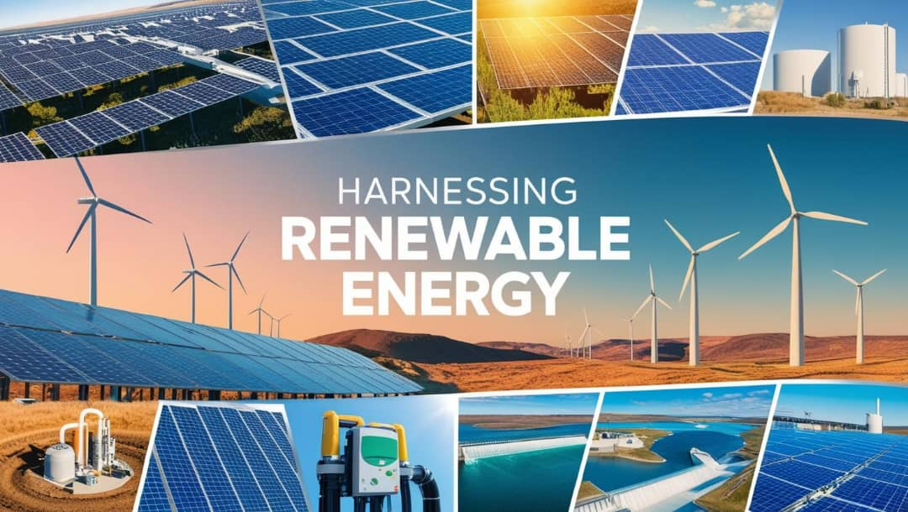
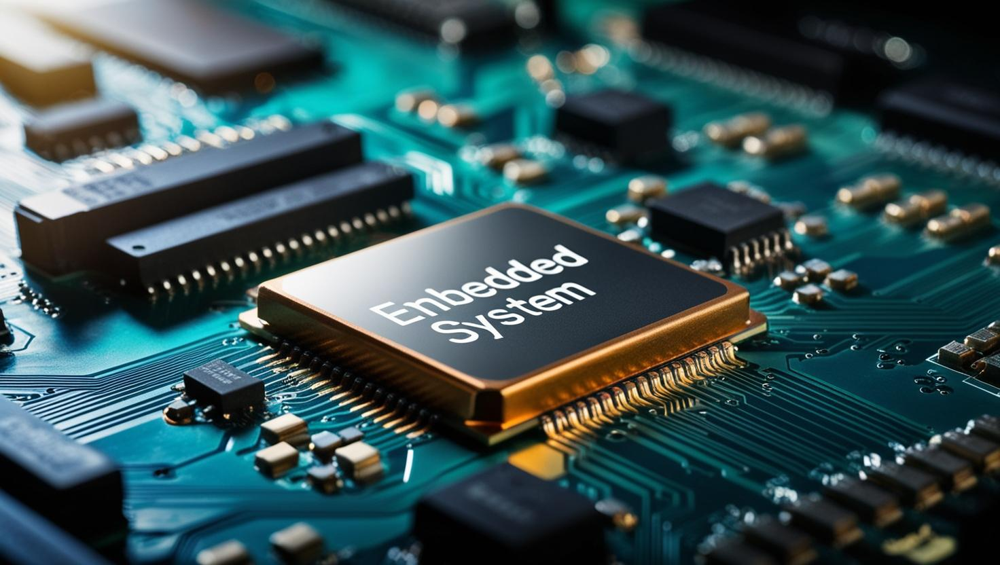
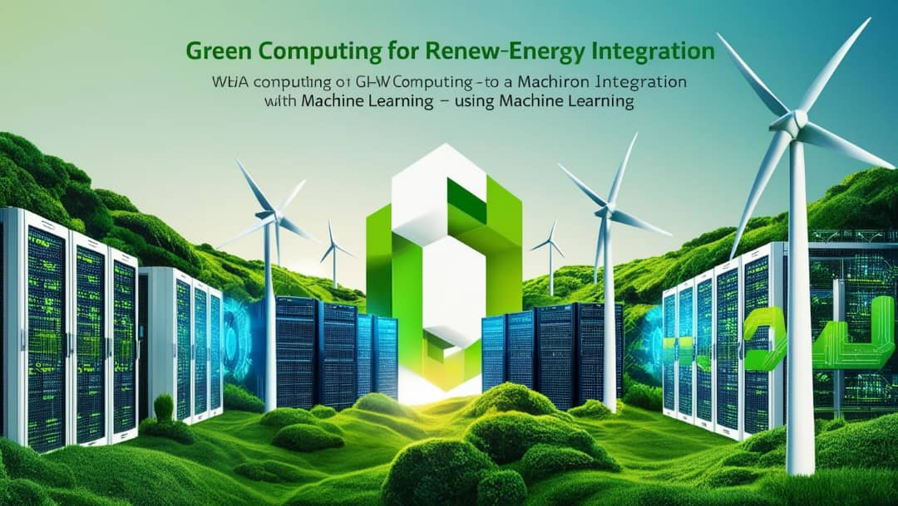
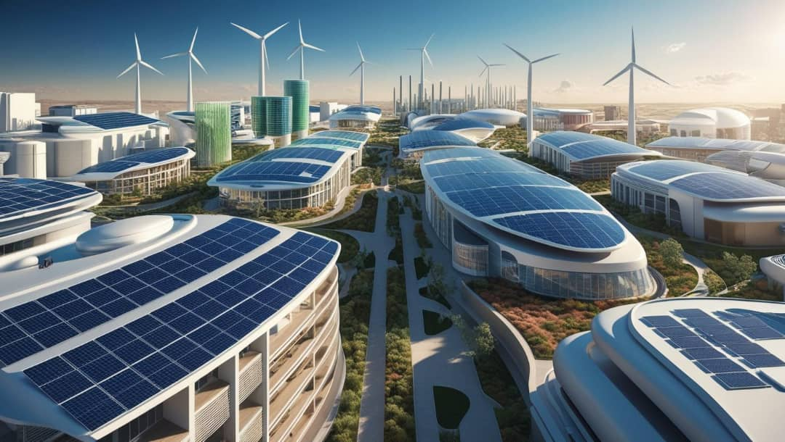
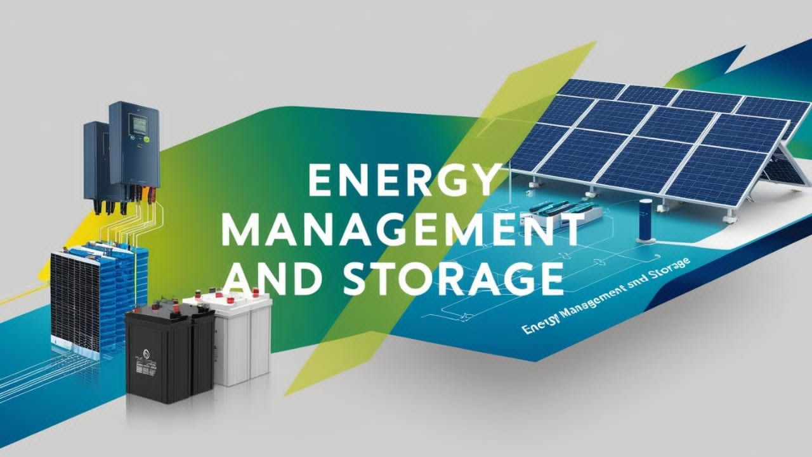
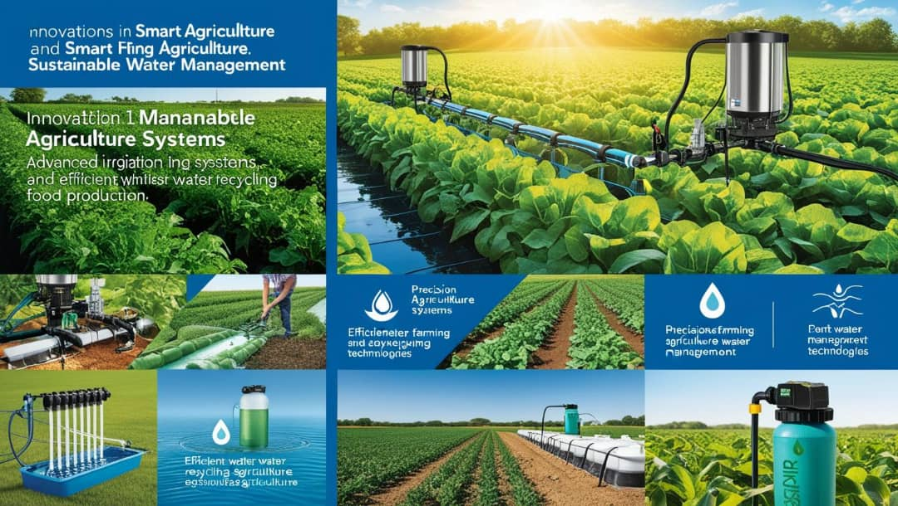
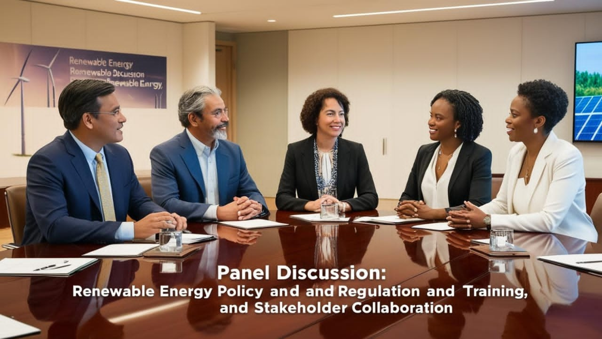

Explore the wide range of topics covered in our conference, focusing on advancements in renewable energy, embedded systems, and AI technologies.

Theme 1: Harnessing Renewable Energy: Advances and Innovations

Theme 2: Innovations in Embedded Systems for Renewable Energy
Management

Theme 3: Green Computing (ML/AI) for Renewable Energy Integration

Theme 4: Advancing Hybrid Energy Systems for Sustainable Infrastructure

Theme 5: Energy Management and Storage

Theme 6: Innovations in Smart Agriculture and Sustainable Water
Management

Panel Discussion: Renewable Energy Policy and Regulation, Education and
Training, and Stakeholder Collaboration